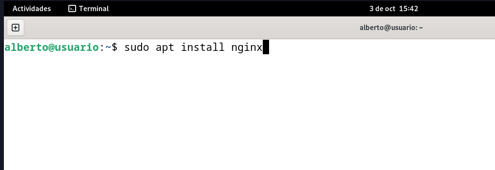
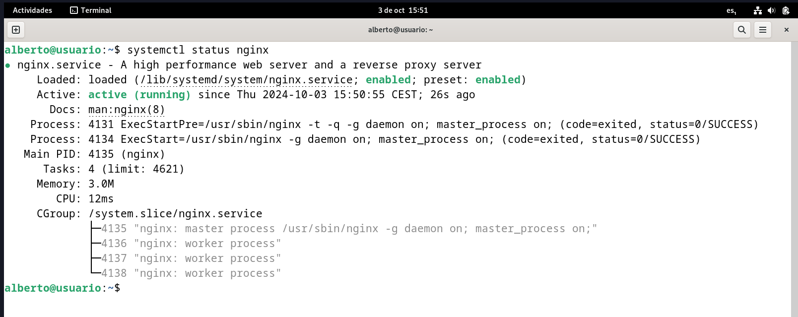
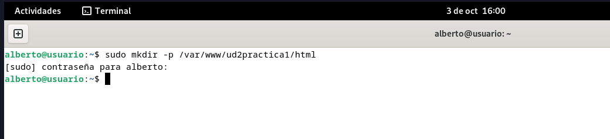
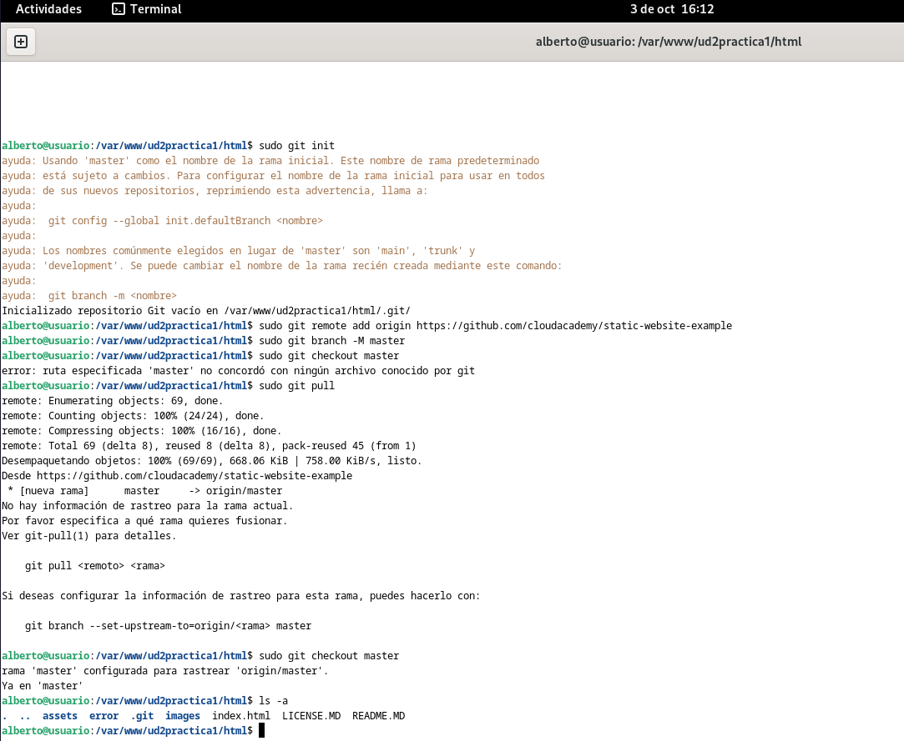
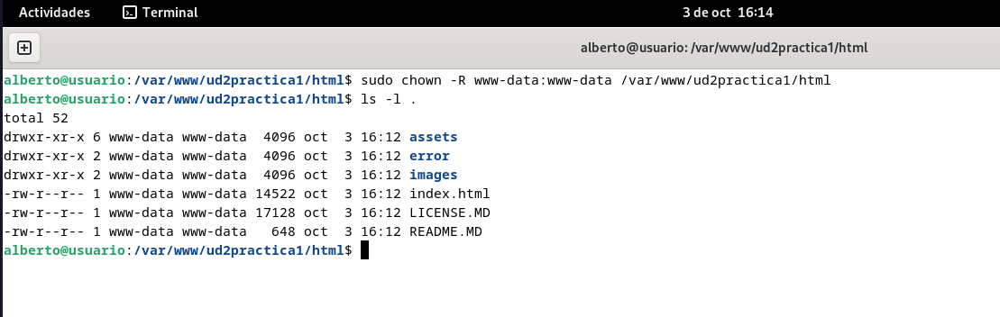
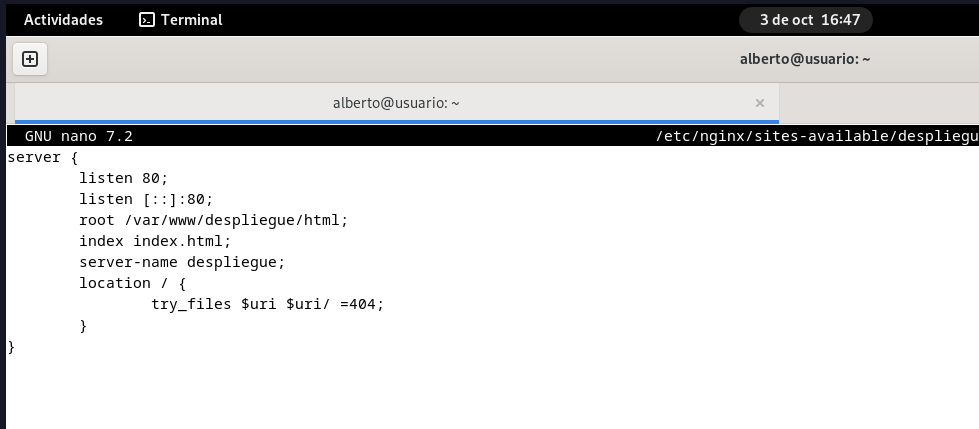
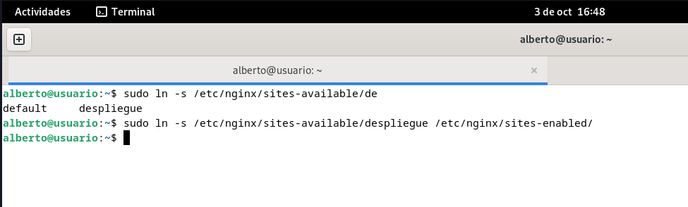
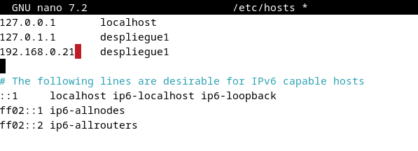
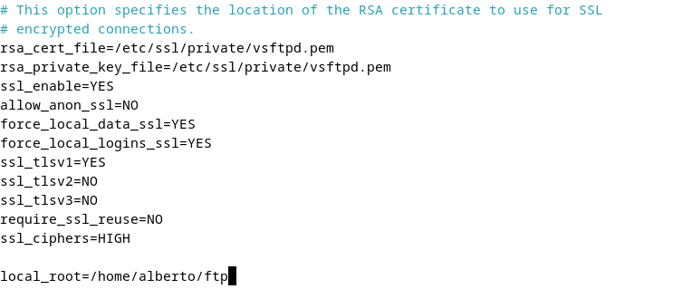

Práctica 2.1
Instalación de NGINX
Para instalar Nginx en nuestro equipo Debian, ejecutamos en la terminal:
sudo apt install nginx

Si al hacer:
systemctl status nginx
el servicio aparece como "failed", es posible que tengamos apache2 instalado y utilizando el puerto 80. En ese caso tendremos que, primero, parar el servicio de Apache con:
systemctl stop apache2
Otra posibilidad es directamente desinstalar apache2 con:
sudo apt remove apache2
y sólo después podremos inicializar el servicio de Nginx con:
systemctl start nginx
Para comprobar el estado de Nginx, volvemos a ejecutar:
systemctl status nginx

Preparación de los directorios del sitio web
Primero, crearemos un directorio para nuestro sitio web:
sudo mkdir -p /var/www/ud2practica1/html

En mi caso, he clonado un repositorio para una web estática de prueba para la página:

Y realizamos unos ajustes sobre la propiedad del directorio:
sudo chown -R www-data:www-data /var/www/ud2practica1/html
sudo chmod -R 755 /var/www/ud2practica1/html

Configuración del servidor
Para que Nginx presente el contenido del sitio, será necesario crear un archivo de configuración en /etc/nginx/sites-available/nombre-del-dominio, con el siguiente contenido:

A continuación tendremos que crear un enlace simbólico entre este archivo y el de los sitios habilitados en Nginx, ejecutando:
sudo ln -s /etc/nginx/sites-available/despliegue /etc/nginx/sites-enabled/ // El nombre es distinto porque cambié el nombre de directorio a "despliegue"

Y reiniciamos Nginx con:
systemctl restart nginx
Por último, añadiremos la IP de la máquina a la lista de hosts:

Configurar SFTP
Para configurar el protocolo de transferencia de archivos, realizaremos las siguientes configuraciones desde el terminal:
// Instalamos vsftpd
sudo apt-get install vsftpd
// Creamos un directorio en home
mkdir /home/alberto/ftp
// Creamos certificados de seguridad
sudo openssl req -x509 -nodes -days 365 -newkey rsa:2048 -keyout/etc/ssl/private/vsftpd.pem -out /etc/ssl/private/vsftpd.pem
A continuación, modificaremos el archivo de configuración /etc/vsftpd.conf. Buscamos las líneas:
rsa_cert_file=/etc/ssl/certs/ssl-cert-snakeoil.pem
rsa_private_key_file=/etc/ssl/private/ssl-cert-snakeoil.key
ssl_enable=NO
las borramos y escribimos en su lugar lo siguiente:

Tras lo que reiniciamos el servicio con:
sudo systemctl restart --now vsftpd